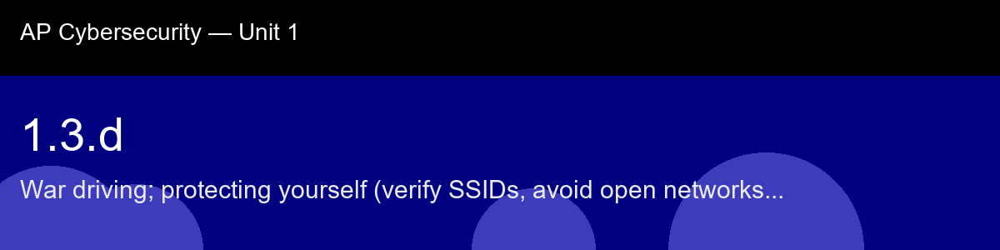

1.3.d recap, War driving; protecting yourself (verify SSIDs, avoid open networks, VPN)
Nice work today. Here's what to lock in:
- Recap handout:
post-lecture-handout.docx
- Simulation: SimLab
- Self-check quiz: due before next class
The big picture: The three-step protocol, verify, avoid open networks, VPN, is deliberately ordered, and the ordering itself teaches something: each step is a fallback for when the previous one fails. Verifying the SSID doesn't help if you can't actually verify it. Avoiding open networks doesn't help if the only option is open. The VPN is the last line specifically because it's the only one of the three that still protects you even when everything upstream of it went wrong, the same defense-in-depth logic you'll see formalized later in this course as a named principle, first encountered here as plain common sense.
Key terms to lock in:
- War driving, moving through a geographic area with a wireless scanner to discover and log Wi-Fi networks; used in legitimate research and as an attack-planning technique.
- Open network, a Wi-Fi network requiring no password; all traffic is unencrypted at the wireless layer, visible to any device that joins or captures the channel.
- VPN (Virtual Private Network), software that creates an encrypted tunnel from your device to a trusted server before your traffic reaches the internet; protects against interception on hostile networks.
- SSID verification, confirming the correct network name with venue staff or an official source before connecting, to avoid accidentally joining an evil twin or lookalike network.
- Risk flag, a specific, nameable property of a network that raises the probability of interception or attack (e.g., "open-network", "unverified-ssid", "no-vpn").
Common misconceptions -- don't fall for these:
- "A password-protected network means I am safe." → WPA2 encrypts the air interface, but the access point operator can still read unencrypted traffic, and a compromised or malicious AP can intercept HTTPS via SSL stripping. A VPN provides an additional layer.
- "I can tell if a network is legitimate by its name." → SSIDs are trivially spoofed. Only direct verification with venue staff is reliable.
- "War driving is only done by sophisticated attackers." → Modern war-driving apps run on smartphones and require no technical skill; the barrier to reconnaissance is extremely low.
Learning objective(s): 1.3.B, 1.3.C

## 1.3.d recap, War driving; protecting yourself (verify SSIDs, avoid open networks, VPN)
Nice work today. Here's what to lock in:
- Recap handout: `post-lecture-handout.docx`
- Simulation: SimLab
- Self-check quiz: due before next class
**The big picture:** The three-step protocol, verify, avoid open networks, VPN, is deliberately ordered, and the ordering itself teaches something: each step is a fallback for when the previous one fails. Verifying the SSID doesn't help if you can't actually verify it. Avoiding open networks doesn't help if the only option is open. The VPN is the last line specifically because it's the only one of the three that still protects you even when everything upstream of it went wrong, the same defense-in-depth logic you'll see formalized later in this course as a named principle, first encountered here as plain common sense.
**Key terms to lock in:**
- **War driving**, moving through a geographic area with a wireless scanner to discover and log Wi-Fi networks; used in legitimate research and as an attack-planning technique.
- **Open network**, a Wi-Fi network requiring no password; all traffic is unencrypted at the wireless layer, visible to any device that joins or captures the channel.
- **VPN (Virtual Private Network)**, software that creates an encrypted tunnel from your device to a trusted server before your traffic reaches the internet; protects against interception on hostile networks.
- **SSID verification**, confirming the correct network name with venue staff or an official source before connecting, to avoid accidentally joining an evil twin or lookalike network.
- **Risk flag**, a specific, nameable property of a network that raises the probability of interception or attack (e.g., "open-network", "unverified-ssid", "no-vpn").
**Common misconceptions -- don't fall for these:**
- "A password-protected network means I am safe." → WPA2 encrypts the air interface, but the access point operator can still read unencrypted traffic, and a compromised or malicious AP can intercept HTTPS via SSL stripping. A VPN provides an additional layer.
- "I can tell if a network is legitimate by its name." → SSIDs are trivially spoofed. Only direct verification with venue staff is reliable.
- "War driving is only done by sophisticated attackers." → Modern war-driving apps run on smartphones and require no technical skill; the barrier to reconnaissance is extremely low.
**Learning objective(s):** 1.3.B, 1.3.C